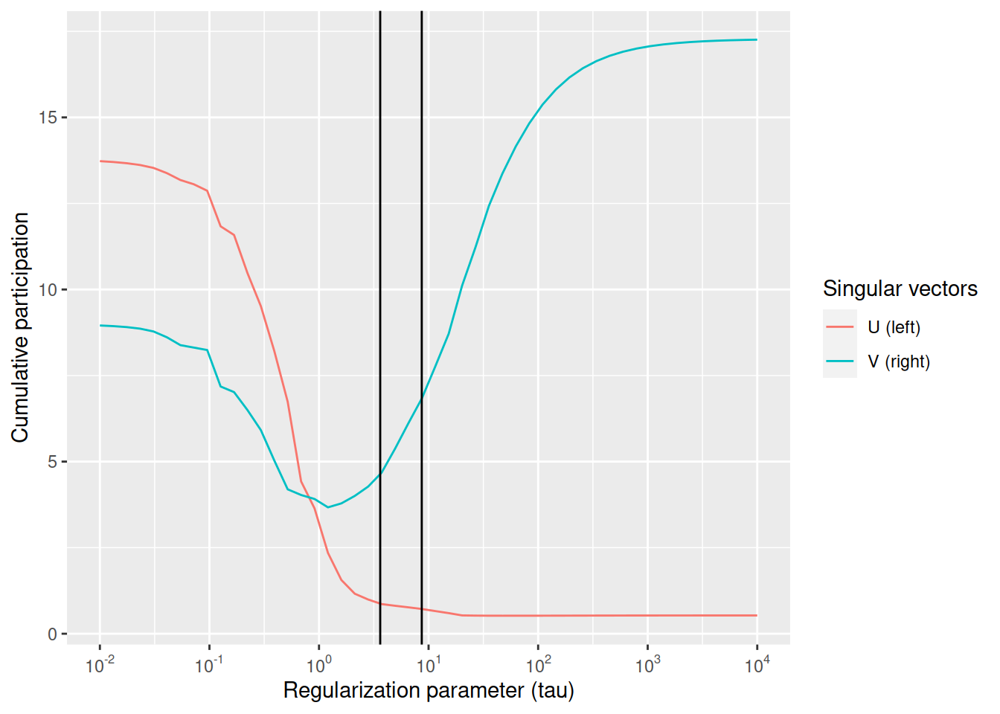
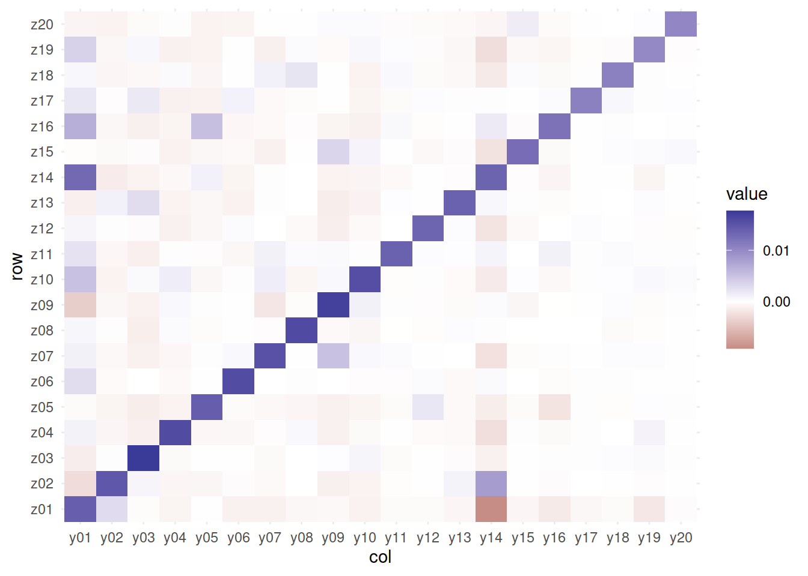
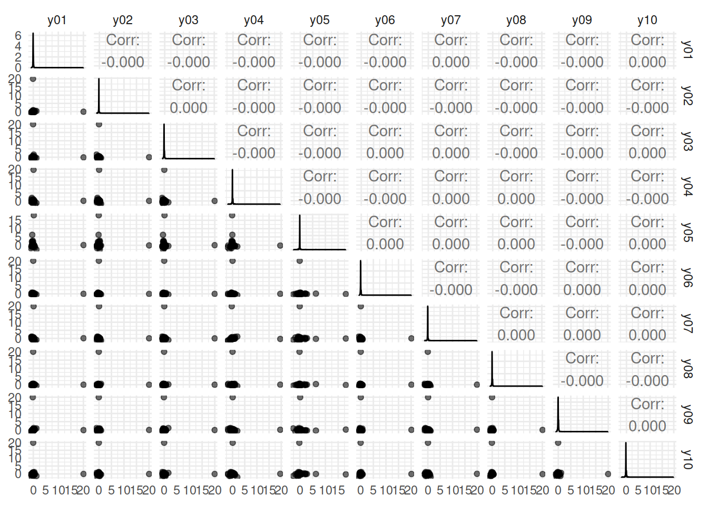
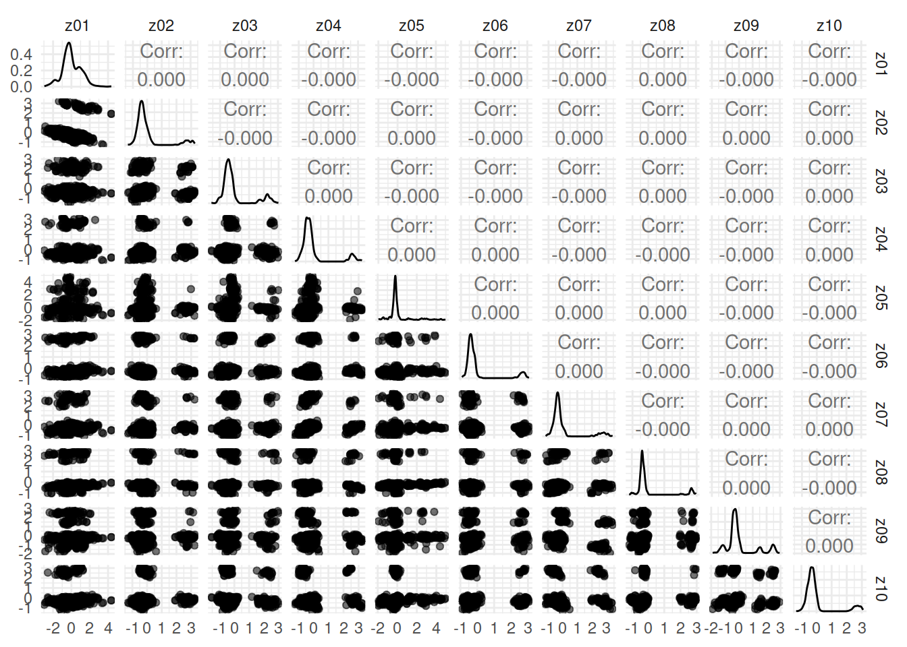
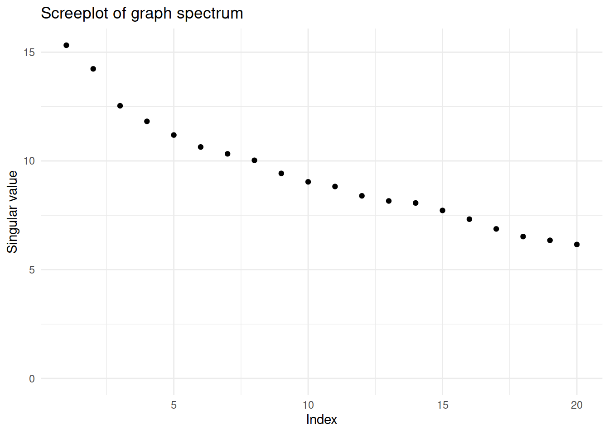
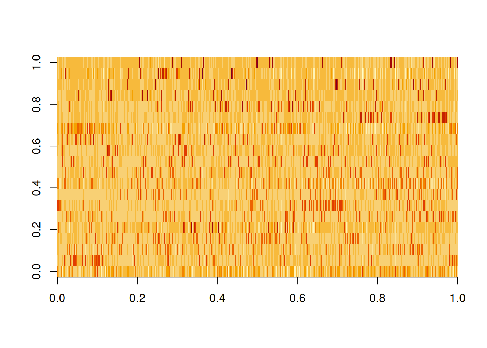
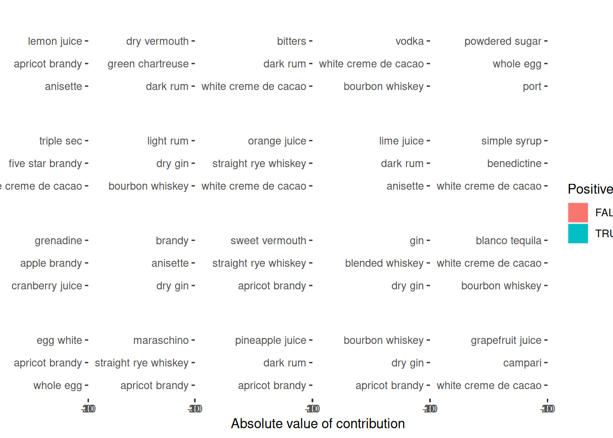
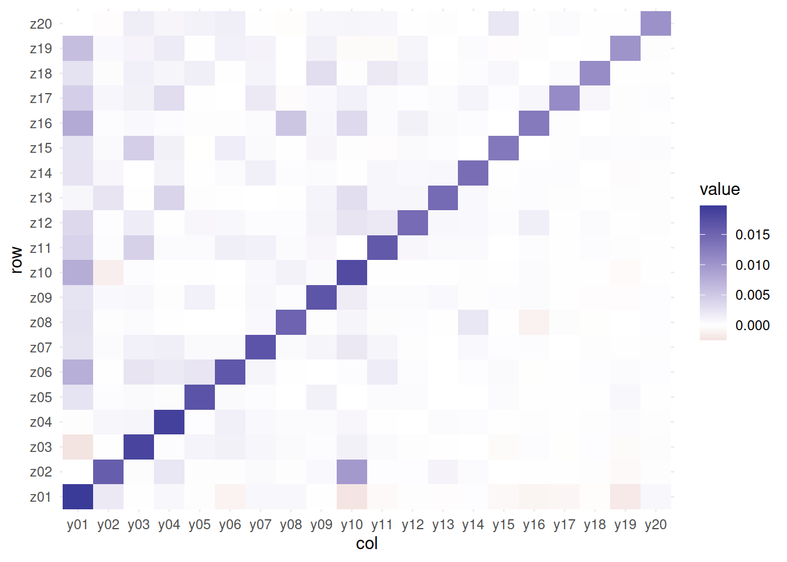

![]()
# A tibble: 569 × 2
ingredient n
<chr> <int>
1 Gin 176
2 Fresh lemon juice 138
3 Simple Syrup 115
4 Vodka 114
5 Light Rum 113
6 Dry Vermouth 107
7 Fresh Lime Juice 107
8 Triple Sec 107
9 Powdered Sugar 90
10 Grenadine 85
# ℹ 559 more rowsSummary
how to use vsp. at the end, visualization and results takeaway for non-technical folks
Warning: There was 1 warning in `mutate()`.
ℹ In argument: `measure_number = parse_number(measure)`.
Caused by warning:
! 20 parsing failures.
row col expected actual
637 -- a number For glass
671 -- a number For glass
794 -- a number For glass
878 -- a number For glass
928 -- a number For glass
... ... ........ .........
See problems(...) for more details.# A tibble: 413 × 1
ingredient
<chr>
1 100 proof vodka
2 151 proof rum
3 17 year old j. wray and nephew ltd. rum
4 7 up
5 absinthe
6 absinthe or pastis
7 absinthe substitute
8 acai berry vodka
9 african rum
10 agave nectar
# ℹ 403 more rows# A tibble: 3,579 × 8
name category row_id ingredient_number ingredient measure measure_number
<chr> <chr> <dbl> <dbl> <chr> <chr> <dbl>
1 Gauguin Cocktai… 1 1 light rum 2 oz 2
2 Gauguin Cocktai… 1 2 passion f… 1 oz 1
3 Gauguin Cocktai… 1 3 lemon jui… 1 oz 1
4 Gauguin Cocktai… 1 4 lime juice 1 oz 1
5 Fort Lau… Cocktai… 2 1 light rum 1.5 oz 1.5
6 Fort Lau… Cocktai… 2 2 sweet ver… .5 oz 0.5
7 Fort Lau… Cocktai… 2 3 orange ju… .25 oz 0.25
8 Fort Lau… Cocktai… 2 4 lime juice .25 oz 0.25
9 Apple Pie Cordial… 3 1 apple sch… 3 oz 3
10 Apple Pie Cordial… 3 2 cinnamon … 1 oz 1
# ℹ 3,569 more rows
# ℹ 1 more variable: n <int># A tibble: 3,489 × 416
name category n light_rum passion_fruit_syrup lemon_juice lime_juice
<chr> <chr> <int> <dbl> <dbl> <dbl> <dbl>
1 Gauguin Cocktai… 113 2 0 0 0
2 Gauguin Cocktai… 4 0 1 0 0
3 Gauguin Cocktai… 311 0 0 1 0
4 Gauguin Cocktai… 180 0 0 0 1
5 Fort Lau… Cocktai… 113 1.5 0 0 0
6 Fort Lau… Cocktai… 84 0 0 0 0
7 Fort Lau… Cocktai… 124 0 0 0 0
8 Fort Lau… Cocktai… 180 0 0 0 0.25
9 Apple Pie Cordial… 1 0 0 0 0
10 Apple Pie Cordial… 2 0 0 0 0
# ℹ 3,479 more rows
# ℹ 409 more variables: sweet_vermouth <dbl>, orange_juice <dbl>,
# apple_schnapps <dbl>, cinnamon_schnapps <dbl>, powdered_sugar <dbl>,
# dark_rum <dbl>, cranberry_juice <dbl>, pineapple_juice <dbl>,
# sour_mix <dbl>, bourbon_whiskey <dbl>, simple_syrup <dbl>,
# soda_water <dbl>, cherry_brandy <dbl>, light_cream <dbl>, triple_sec <dbl>,
# maraschino <dbl>, creme_de_banana <dbl>, amaretto <dbl>, …The biggest difference in PC1 is powdered sugar vs. simple syrup; recipes are not likely to have both, which makes sense! Let’s zoom in on the first four components, and understand which cocktail ingredients contribute in the positive and negative directions.
Attaching package: 'tidygraph'The following object is masked from 'package:stats':
filterLoading required package: future# A tibble: 3,579 × 8
name category row_id ingredient_number ingredient measure measure_number
<chr> <chr> <dbl> <dbl> <chr> <chr> <dbl>
1 Gauguin Cocktai… 1 1 light rum 2 oz 2
2 Gauguin Cocktai… 1 2 passion f… 1 oz 1
3 Gauguin Cocktai… 1 3 lemon jui… 1 oz 1
4 Gauguin Cocktai… 1 4 lime juice 1 oz 1
5 Fort Lau… Cocktai… 2 1 light rum 1.5 oz 1.5
6 Fort Lau… Cocktai… 2 2 sweet ver… .5 oz 0.5
7 Fort Lau… Cocktai… 2 3 orange ju… .25 oz 0.25
8 Fort Lau… Cocktai… 2 4 lime juice .25 oz 0.25
9 Apple Pie Cordial… 3 1 apple sch… 3 oz 3
10 Apple Pie Cordial… 3 2 cinnamon … 1 oz 1
# ℹ 3,569 more rows
# ℹ 1 more variable: n <int>Vintage Sparse PCA Factor Analysis
Rows (n): 989
Cols (d): 413
Factors (rank): 20
Lambda[rank]: 6.159
Components
Z: 989 x 20 [matrix]
B: 20 x 20 [matrix]
Y: 413 x 20 [matrix]
u: 989 x 20 [matrix]
d: 20 [numeric]
v: 413 x 20 [matrix] 


Registered S3 method overwritten by 'GGally':
method from
+.gg ggplot2


# A tibble: 60 × 3
# Groups: factor [20]
id factor loading
<chr> <chr> <dbl>
1 lemon juice y01 20.1
2 apricot brandy y01 1.25
3 anisette y01 -0.928
4 dry vermouth y02 20.1
5 dark rum y02 -0.973
6 green chartreuse y02 -0.898
7 bitters y03 20.0
8 dark rum y03 1.62
9 white creme de cacao y03 -0.845
10 vodka y04 19.6
# ℹ 50 more rows

So PC1 is about powdered sugar + egg + gin drinks vs. simple syrup + lime + tequila drinks. This is the component that explains the most variation in drinks. PC2 is mostly about vermouth, both sweet and dry.

how many ingredients in each cocktail on average?
Warning in left_join(get_z_hubs(fa, 5), cocktails_parsed, by = join_by(id == : Detected an unexpected many-to-many relationship between `x` and `y`.
ℹ Row 1 of `x` matches multiple rows in `y`.
ℹ Row 3155 of `y` matches multiple rows in `x`.
ℹ If a many-to-many relationship is expected, set `relationship =
"many-to-many"` to silence this warning.# A tibble: 434 × 4
# Groups: factor [20]
factor id ingredient measure
<chr> <chr> <chr> <chr>
1 z01 Thanksgiving Special Cocktail apricot brandy .75 oz
2 z01 Thanksgiving Special Cocktail dry gin .75 oz
3 z01 Thanksgiving Special Cocktail dry vermouth .75 oz
4 z01 Thanksgiving Special Cocktail lemon juice .25 oz
5 z01 Western Rose Cocktail apricot brandy .5 oz
6 z01 Western Rose Cocktail dry gin 1 oz
7 z01 Western Rose Cocktail dry vermouth .5 oz
8 z01 Western Rose Cocktail lemon juice .25 oz
9 z01 Prince's Smile Cocktail apricot brandy .5 oz
10 z01 Prince's Smile Cocktail apple brandy .5 oz
# ℹ 424 more rowsNormalization / scaling
Attaching package: 'Matrix'The following objects are masked from 'package:tidyr':
expand, pack, unpack

https://juliasilge.com/blog/cocktail-recipes-umap/